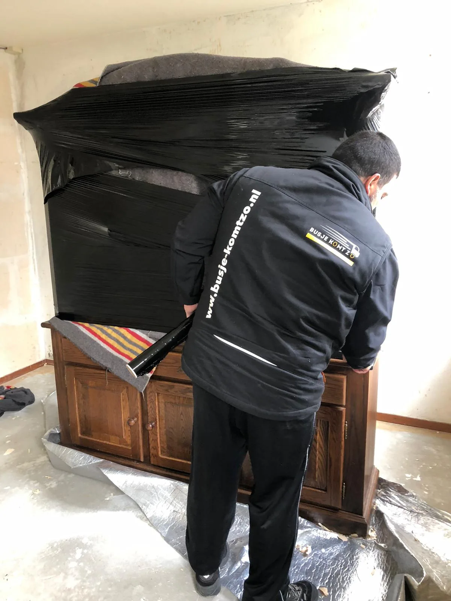

Werk per kamer
Loop woonkamer, slaapkamers, keuken, werkplek en tuin afzonderlijk langs.
Gratis M3 calculator voor uw verhuizing
Tel meubels, apparaten en dozen per kamer. U krijgt direct een praktische volume-indicatie die u kunt meenemen naar de offerte.

Hoeveel verhuisdozen in 1 m³?
In deze calculator telt een standaard verhuisdoos als 0,1 m³. Grote of afwijkend gevulde dozen kunnen meer ruimte innemen.
Loop woonkamer, slaapkamers, keuken, werkplek en tuin afzonderlijk langs.
Neem kasten, banken, bedden en apparaten afzonderlijk mee in de berekening.
Volume is één onderdeel. Verdiepingen, lift, loopafstand, hulp en kilometers bepalen mede de offerte.

Van volume naar prijs
De verhuisafstand, toegang tot beide adressen, het aantal verhuizers, de verwachte duur en aanvullende werkzaamheden worden apart beoordeeld. Daarom tonen we de uitkomst als indicatie.
Vul de volledige verhuisaanvraag inVeelgestelde vragen
Gebruik de calculator als startpunt en controleer grote of afwijkende voorwerpen altijd in uw aanvraag.
Een kubieke meter beschrijft hoeveel laadruimte uw inboedel ongeveer inneemt: één meter breed, één meter diep en één meter hoog.
Deze calculator rekent met ongeveer tien standaard verhuisdozen per kubieke meter. Het echte aantal hangt af van het formaat en hoe vol de dozen zijn.
Nee. De uitkomst is een praktische indicatie op basis van gemiddelde itemvolumes. Afmetingen, demontage en stapeling kunnen afwijken.
Nee. Ook het aantal verhuizers, de duur, het voertuig, gereden kilometers en de toegang tot beide adressen zijn van invloed.
Meet de grootste lengte, breedte en hoogte in centimeters. De afmetingencalculator deelt lengte × breedte × hoogte door 1.000.000 en voegt de afgeronde volume-indicatie toe. Vermeld gewicht en bijzonderheden apart in de aanvraag.